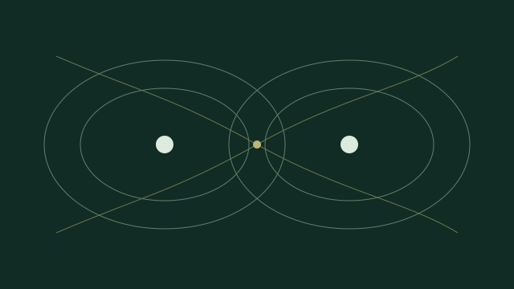
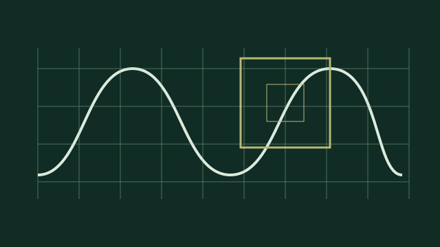
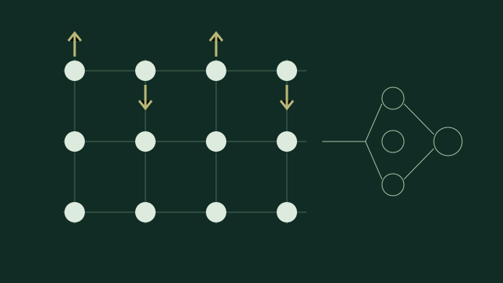
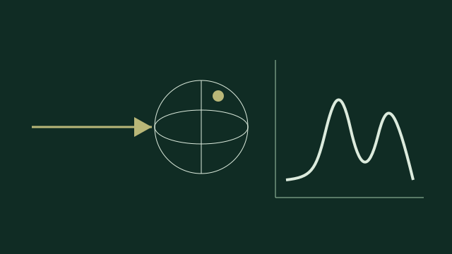
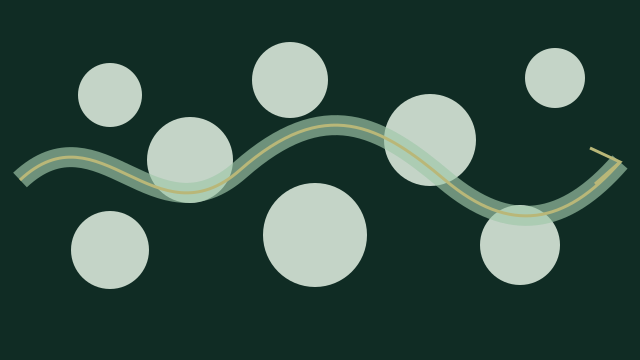

Research
From the topology of electron density to the flow of fluids through rock: six connected themes reveal a career built around making complex physical systems computable and interpretable.
Bonding & quantum topology
Turning electron density into chemical meaning through QTAIM, source functions and physically grounded descriptors.
02 / 06Materials under pressure & confinement
Predicting structures and properties where pressure, dimensionality or composition overturn ambient intuition.
03 / 06Electronic-structure methods & software
Building numerical methods and open scientific infrastructure for accurate, scalable simulation.
04 / 06Magnetism & data-driven materials
Combining atomistic physics with machine learning to model magnetic and compositionally complex systems.
05 / 06Spectroscopy & excited-state response
Connecting perturbations at the quantum scale with measurable spectra, transport and ultrafast response.
06 / 06Porous media & multiscale flow
Extending computational modelling from atomistic systems to multiphase transport in geological media.

This is the foundation of Tantardini's research identity. His doctoral work studied chemical bonding through quantum chemical topology; subsequent papers used electron-density topology, source functions and thermochemical cycles to examine electronegativity, hydrogen bonding, van der Waals interactions and molecular crystals.
The central question is interpretive: how can a many-electron calculation be translated into chemically meaningful quantities without losing its physical basis?
From Skoltech onward, crystal-structure prediction and first-principles modelling became a second major strand. The work explores phases stabilized by pressure, reduced dimensionality or unconventional stoichiometry: two-dimensional NaCl and silicene, W–Mo–B compounds, hydrogen-rich solids and functionalized diamanes.
These studies connect stability and bonding with phonons, electronic properties, hardness and, where relevant, superconducting behaviour.

Method development is treated as part of the scientific problem. Contributions span constrained density-functional theory, density-functional perturbation theory for metals, pseudopotential validation, multiresolution methods and major community codes including ABINIT and the VAMPyR multiwavelet library.
The unifying aim is controlled accuracy at useful scale: algorithms that make difficult electronic-structure calculations reproducible, efficient and available to other researchers.

Recent work uses data-driven models where conventional atomistic approximations become restrictive. Magnetic machine-learning potentials for Fe–Al and CrN reproduce coupled structural and spin degrees of freedom, while symbolic regression has been used to build interpretable descriptors for material hardness.
This theme also reaches compositionally complex ceramics, including high-entropy carbonitrides, where large chemical spaces demand both physical constraints and efficient surrogate models.

Response properties connect formal electronic structure with experiment. This strand includes electron–phonon response, conductivity, GIPAW nuclear-magnetic-resonance calculations and real-time or frequency-domain descriptions of electronic excitation.
The Humboldt project extends this trajectory to the Bethe–Salpeter equation, focusing on robust numerical solutions and AI-assisted parameter optimization for excited-state spectroscopy.

At KFUPM's Center for Integrative Petroleum Research, the modelling scale broadens to multiphase transport in porous media. Recent outputs address Buckley–Leverett displacement, global-pressure formulations, dynamic capillarity, representative elementary volumes and carbon-dioxide migration.
Although the spatial scale changes radically, the methodological thread remains the same: derive tractable models, quantify approximation error and relate numerical behaviour to physically observable transport.
Scientific trajectory
The timeline shows how the research expanded from bonding analysis to predictive materials, numerical methods and multiscale response.
Interpreting chemical bonding
Electron-density topology, source functions and a PhD on quantum chemical topology.
Predicting new materials
High-pressure and low-dimensional phases, hydrogen-rich compounds and crystal design.
Building methods at scale
Multiwavelets, relativistic electronic structure, open software and magnetic machine learning.
Excited states and multiscale flow
Bethe–Salpeter methods, spectroscopic response and porous-media transport at KFUPM.